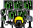

Alguns serviços que prestei e posso prestar gratuitamente envolvendo projectos comunitários ou associativos com
fim social dentro do mundo da comunidade livre e GNU/Linux:
-Organização de eventos GNU/Linux.
-Suporte a ambientes máquina com GNU/Linux- sistema e software livre.
-Sugestão de alternativas a produtos privados com Software Livre ou sistema GNU/Linux.
-Conferências; ou mesas redondas sobre Software Livre e GNU/linux.
-Artwork e Design voltado a projectos comunitários.
-Sessões demonstrativas com software gráfico, produtivo, vídeo ou 3D.
-Apoio a núcleos GNU/Linux.
-Fornecimento de documentos traduzidos de distintas comunidades nas quais me envolvo.
-Ajuda a desenvolvimento de actividades divulgativas - GNU/Linux, Software Livre e procedimentos abertos voltados a Multimédia com Software, em escolas,
bibliotecas ou grupos formais ou informais de interessados.
-Ajuda no desenvolvimento de sistemas personalizados ou voltados a ambiente personalizado com sistema GNU/Linux.
